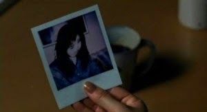

Egy fiatal újságírónő, Reiko egy 'elátkozott' videókazetta városi legendáját kutatja, kamaszokkal készít interjút.
Egy nap meghal az unokahúga, Tomoko: szívinfarktus végez vele, de az arcára rettenetes, rémült kifejezés dermed, Reiko pedig megpróbálja kideríteni, hogy miért.
Hamarosan megtudja, hogy nemcsak Tomoko, hanem több barátja is hasonló módon halt meg. Reiko talál néhány fényképet Tomoko szobájában, amiből egy kép igen rémisztő: Mindenki arca el van mosódva.
Reiko elutazik a nyaralóhelyre, ahol Tomokoék is voltak és talál egy névtelen kazettát. Megnézi a videót, majd rájön hogy nyilvánvalóan a kazetta végzett velük.
Alighogy kikapcsolja a tévét, a tükröződésben meglát egy fehér ruhás nőt, majd csörögni kezd a telefon. Rettegve felveszi, de csak a kazettán hallható rémisztő csikorgást hallja. Feljegyzi a pontos időt, majd azonnal távozik a kazettával.
Válaszokat keresve segítséget kér volt férjétől de a férfi nem nagyon akar hinni az átoknak. Lefényképezteti magát és az ő arca is el van mosódva. Ryuji megnézi a kazettát és egy másolatot kér Reikotól. Együtt folytatják tovább de a kazetta tartalma csak két nőről, valami kitörésről, visszafordított szövegről és egy befejezetlen névről (Sada) szól.
A tükörben lévő nő egy különleges képességgel rendelkező nő, Shizuko Yamamura, akivel Dr. Heihachiró Ikuma kísérletezett, valamint kiderül hogy Shizuko 40 éve a vulkánba ugrott.
Reiko egy időre fiával, Yoichival elutazik szüleihez de éjszaka Reiko arra ébred hogy Yoichi megnézte a kazettát mert Tomoko megkérte rá. Fogalma sincs arról hogy a megoldás ott van a szeme előtt. Izübe utaznak, ahol találkoznak Shizuko testvérével, majd amikor a férfi menekülni kezd, Ryuji lefogja, ezzel megtudva az igazságot: Dr. Ikuma bemutatót tartott Shizuko képességeiről de az egyik néző hazugsággal kezdte vádolni őket, majd hirtelen titokzatos módon meghalt.
A fehér ruhás lány kirohant a függöny mögül, ezzel Reiko rájön, a kazettán lévő név befejezve Sadako Yamamura, Shizuko és Ikuma lánya és hogy ő készítette a kazettát.
Visszatérnek a faházhoz, ahol Sadako meghalt. A ház alatt megtalálják a kutat és rájönnek hogy Ikuma dobta a kútba Sadakót. Reiko félve de leereszkedik a kútba, ahol megtalálja a lány csontvázát és kihívják a rendőrséget.
Időközben a határidő lejár, ezzel megtört az átok. Másnap reggel Reikónak rossz érzése van, ezért átmegy Ryujihoz. A férfi el van merülve a munkában, amikor hallja a csikorgást. Félve néz a tévéjére, ami Sadako kútját mutatja.
Nem érti a dolgot, így kíváncsian nézi hogy mi történik. Sadako kimászik a kútból és elindul a tévé felé. Ryuji telefonhívást kap Reikotól de késő: Sadako kijön a tévéből és megöli Ryujit.
Reiko odaér a lakáshoz de csak Ryuji diákját találja ott, értetlenkedve. Hazaviszi a kazettát és próbál rájönni, mit tett másképp, majd a tévé tükröződésében meglátja Ryuji szellemét, aki a másolatra mutat. Reiko megérti, Yoichi miért nézze meg a kazettát: Az átok megtöréséhez le kell másolni a videót és egy héten belül megmutatni másnak, ezzel tovább adva az átkot.
Útnak indul a videólejátszóval hogy a másolatot megmutassa apjának, ezzel megmentve Yoichit.
